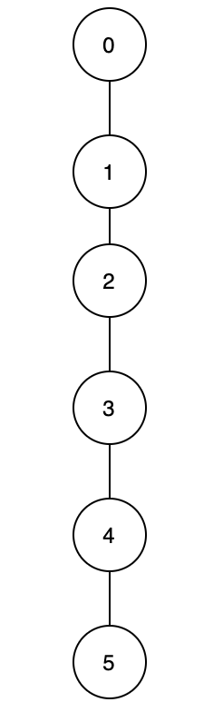

На данный момент мы реализовали два типа «непересекающихся множеств», и оба они имеют вызывающую беспокойство неэффективность. В частности, реализация быстрого поиска всегда будет тратить время O(n) на операцию объединения, а в реализации быстрого объединения, как показано на рисунке 6, все вершины могут образовать линию после их соединения с помощью union, что приводит к findв худшем случае. Есть ли способ оптимизировать эти реализации?
Есть конечно; это объединение по рангам. Слово «ранг» означает упорядочение по определенным критериям. Раньше для функции union мы всегда выбирали корневой узел x и устанавливали его в качестве нового корневого узла для другой вершины. Однако, выбирая родительский узел на основе определенных критериев (по рангу), мы можем ограничить максимальную высоту каждой вершины.
Говоря конкретнее, «ранг» относится к высоте каждой вершины. Когда мы union две вершины, вместо того, чтобы всегда выбирать корень x (или y, это не имеет значения, если мы последовательны) в качестве нового корневого узла, мы выбираем корневой узел вершины с большим «рангом». ». Мы объединим более короткое дерево с более высоким деревом и назначим корневой узел более высокого дерева корневым узлом для обеих вершин. Таким образом мы эффективно избегаем возможности соединения всех вершин в прямую линию. Эта оптимизация называется «непересекающимся множеством» с объединением по рангу.

Figure 6. A line graph
В этом видео вы узнаете, как на самом деле реализовать «непересекающееся множество» с объединением по рангу.
Video: Disjoing Sets - Union by Rank_1080p
В момент времени 0:52 мы фактически построили связанный список узлов с 5 в качестве корневого узла, где 4 указывает на 5, 3 на 4, 2 на 3, 1 на 2 и 0 на 1. Это демонстрирует основную неэффективность Quick Union. Внимательный наблюдатель заметит, что union(x, y) в нашей предыдущей реализации Quick Union всегда будет указывать rootY на rootX. Таким образом, фактический порядок операций для создания «дерева», показанного на 0:52, будет следующим: union(1, 0), union(2, 0), union(3, 0), union(4, 0), union(5, 0)). . Тем не менее, ключевая идея остается прежней: Quick Union рискует сформировать перекошенное дерево.
Вот пример реализации объединения по рангу.
def __init__(self, size):
self.root = [i for i in range(size)]
self.rank = [1] * size
def find(self, x):
while x != self.root[x]:
x = self.root[x]
return x
def union(self, x, y):
rootX = self.find(x)
rootY = self.find(y)
if rootX != rootY:
if self.rank[rootX] > self.rank[rootY]:
self.root[rootY] = rootX
elif self.rank[rootX] < self.rank[rootY]:
self.root[rootX] = rootY
else:
self.root[rootY] = rootX
self.rank[rootX] += 1
def connected(self, x, y):
return self.find(x) == self.find(y)
| Union-find Constructor | Find | Union | Connected | |
| Time Complexity | O(N) | O(logN) | O(logN) | O(logN) |
Примечание: N — количество вершин в графе.
Нам нужно O(N) пространство для хранения массива размером 𝑁